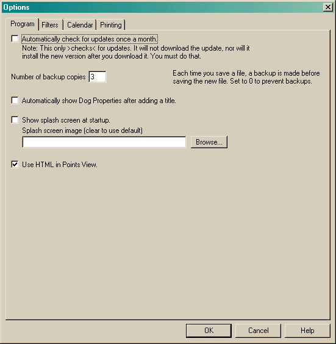

The Program options allow you to configure a variety of general program items.

By default, the program checks to see if there is a new version once every 30 days. The check simply reads a file located at http://www.agilityrecordbook.com/version.txt, This action is performed when the program starts or the user specifically selects a menu item or clicks the button in the About dialog. If a newer version is available, you are asked if you would like to download it. If you answer yes, your web browser is started using the URL "http://sourceforge.net/project/showfiles.php?group_id=86294". This is just one location where the installation program is available. Once you download the program, you must then install it. Agility Record Book does not attempt to do any of this behind your back.
In addition, the program will check to see if a newer configuration is available each time you open a document. This information is contained in the file version.txt mentioned above. If a newer version is available, you will be prompted to upgrade. Unlike the previous update, this one will actually do the update. Note: this check will only occur if you have previously checked for updates - it will not access the web itself. This is because accessing a file on the web may take some time - delaying a file open to do this is not acceptable, so when an update check is actually done, we cache that information for future use.
The Number of backup copies option allows you to make a backup each time you save the file. If your file name is "Megan.arb", then the backup files are named "Megan.arb.bckn" where n is a digit. The greater the digit, the older the backup file. This is handy in case you save something you didn't want to, or if for some reason saving the file caused the current copy to become corrupted.
The Show splash screen option allows you to show (or hide) a splash screen when the program starts. If this name is blank or the image cannot be loaded, then the default image is used. (The default image is a picture of Megan and myself at the 2003 USDAA Nationals in Irving Texas. Many thanks to Christine McHenry of Skipper Productions for permission to use this image.) The only caveat to this option is that you must specify a Windows bitmap (.bmp) file.
The Use HTML in Points View option allows you to view the Points View in Html. If this option is disabled, you do not have a valid version of Internet Explorer installed (IE 5.0 sp2 or higher). If you turn this option off, the original Points View (a list) will be used. One big advantage to using HTML is its superior printing ability.
All View Options are saved into the local Windows Registry.